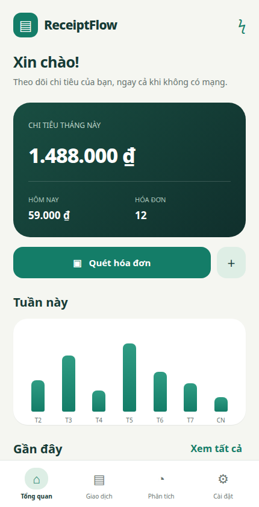
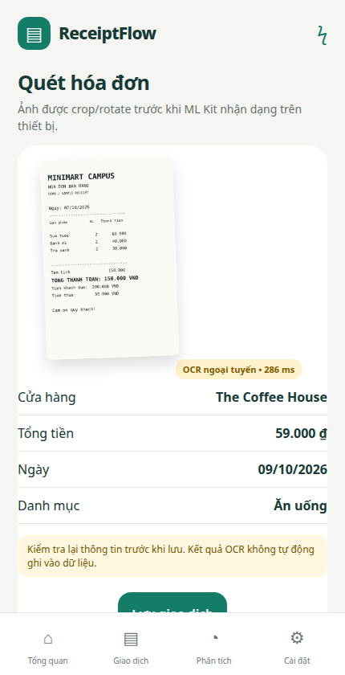
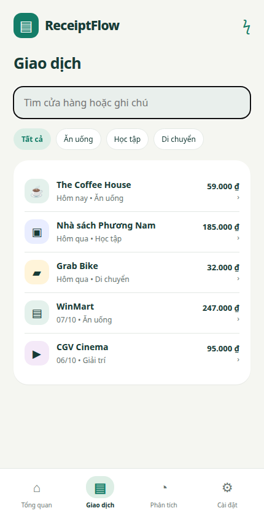
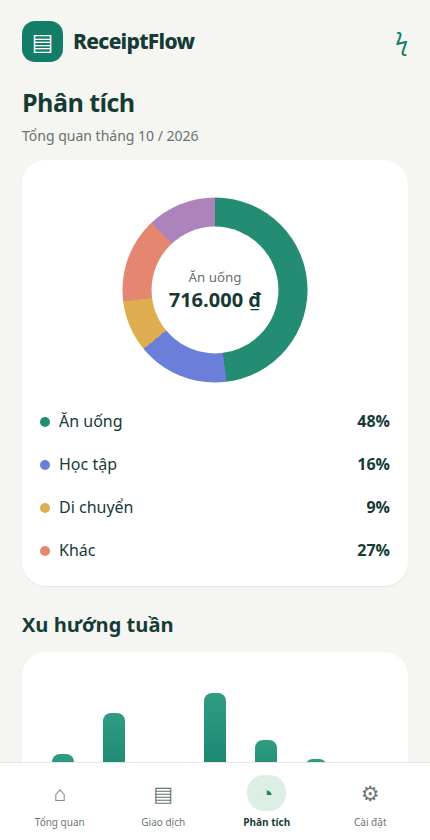
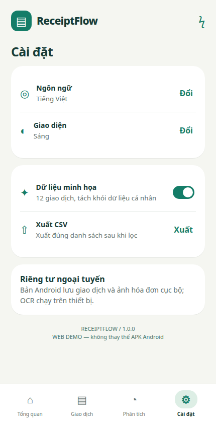

BÁO CÁO MINI-PROJECT #3
Học phần: Lập trình ứng dụng di động
| Sinh viên thực hiện: | Lê Công Tuấn Khôi |
| Mã sinh viên: | 23IT130 |
| Tên dự án: | ReceiptFlow |
| Công nghệ: | Flutter, Dart, ML Kit, SQLite, Riverpod |
| Repository: | https://github.com/tuaw-khoi/miniproject3 |
Việc ghi chép chi tiêu thủ công thường bị bỏ quên, trong khi các ứng dụng phụ thuộc cloud làm phát sinh yêu cầu đăng nhập, kết nối mạng và lo ngại về ảnh hóa đơn cá nhân. ReceiptFlow được xây dựng như một ứng dụng Android offline-first: nhận dạng hóa đơn ngay trên thiết bị, yêu cầu người dùng kiểm tra kết quả, sau đó lưu giao dịch và ảnh vào bộ nhớ cục bộ.
Mục tiêu của dự án là rút ngắn quá trình nhập chi tiêu nhưng vẫn giữ quyền kiểm soát cho người dùng. Ứng dụng không dùng tài khoản, không gửi ảnh lên máy chủ và không cần API OCR trả phí. Dữ liệu minh họa được tách khỏi dữ liệu cá nhân để phục vụ thuyết trình an toàn.
| Nhóm chức năng | Nội dung |
|---|---|
| Quét hóa đơn | Camera preview, flash, tap-to-focus, khung căn chỉnh, chọn ảnh thư viện, crop/rotate và ảnh mẫu tổng hợp. |
| OCR và parser | ML Kit Latin chạy trên thiết bị; phân tích cửa hàng, tổng tiền, ngày và gợi ý danh mục; luôn có bước review. |
| Quản lý giao dịch | Thêm thủ công, lưu, xem chi tiết, sửa, xóa, tìm kiếm và lọc theo danh mục/khoảng ngày. |
| Lưu trữ offline | SQLite cho giao dịch; ảnh riêng tư và thumbnail; dọn file mồ côi khi khởi động. |
| Phân tích | Donut chart theo danh mục và weekly bar chart có animation, chạm để xem giá trị. |
| Tiện ích | Xuất CSV UTF-8, tiếng Việt/English, sáng/tối/theo hệ thống và dữ liệu demo riêng. |
Ứng dụng khởi động vào trang Tổng quan. Người dùng có thể quét hóa đơn hoặc nhập thủ công. Với luồng OCR, ảnh chỉ được lưu cùng giao dịch sau khi người dùng xác nhận. Nếu hủy crop, OCR lỗi hoặc rời form, file tạm được xóa để không làm đầy bộ nhớ.
Bước 1: Chụp ảnh, chọn từ thư viện hoặc dùng hóa đơn mẫu tổng hợp.
Bước 2: Crop/rotate ảnh; ML Kit nhận dạng văn bản ngay trên thiết bị.
Bước 3: Parser tìm merchant, tổng tiền, ngày và danh mục; cảnh báo trường mơ hồ.
Bước 4: Người dùng kiểm tra, sửa dữ liệu và bấm Lưu.
Bước 5: SQLite lưu giao dịch; ảnh gốc/thumbnail được chuyển vào thư mục riêng tư.
Bước 6: Tìm kiếm, lọc, xem biểu đồ hoặc xuất CSV.


Số tiền phải lớn hơn 0 và không vượt ngưỡng dữ liệu cho phép; merchant không được để trống. Nút lưu được khóa trong khi xử lý để tránh tạo hai bản ghi do chạm nhanh. OCR chỉ đưa ra gợi ý, không phải độ tin cậy tuyệt đối và không được phép bỏ qua bước review.
Dự án chia giao diện, trạng thái, dữ liệu và dịch vụ nền tảng thành các lớp riêng. Widget chỉ hiển thị/nhận thao tác; AppController điều phối trạng thái; repository và image store chịu trách nhiệm lưu trữ.
GoRouter tổ chức bốn tab chính và các route quét, chỉnh sửa, chi tiết. Material 3 cung cấp theme; ARB sinh localization tiếng Việt và tiếng Anh. CustomPainter vẽ biểu đồ mà không cần thư viện chart ngoài.
Riverpod Notifier lưu danh sách giao dịch, locale, theme và chế độ demo. Sau mỗi thao tác save/delete, state được cập nhật và sắp xếp lại theo ngày mà không cần tải lại toàn bộ màn hình.
| Trường | Kiểu/ý nghĩa | Quy tắc |
|---|---|---|
| id | UUID chuỗi | Khóa chính, không lặp. |
| merchant | Tên cửa hàng | Không rỗng, cho phép sửa sau OCR. |
| amount | Số nguyên VND | Dương, tránh sai số số thực. |
| date/category | Ngày địa phương và enum | Ngày lưu YYYY-MM-DD; category ổn định khi đổi ngôn ngữ. |
| image/thumbnail | Đường dẫn file riêng tư | Chỉ lưu sau khi transaction hợp lệ. |
| raw_text | Văn bản OCR | Dùng kiểm tra và chỉnh sửa, không tải lên server. |
Văn bản OCR được chuẩn hóa về chữ thường và bỏ dấu để so khớp ổn định. Regex nhận ngày dạng ngày/tháng/năm và các mẫu tiền Việt Nam. Mỗi dòng chứa số tiền được chấm điểm: từ khóa “tổng thanh toán/total” được ưu tiên; “tiền khách đưa/cash/change/giảm giá” bị loại. Parser không chọn đơn giản số lớn nhất vì hóa đơn có thể chứa tiền khách đưa lớn hơn tổng cần trả.



Dữ liệu demo nằm trong database riêng. Khi tắt demo, ứng dụng trở lại database cá nhân mà không trộn giao dịch mẫu. Locale/theme được giữ bằng SharedPreferences, còn category ID trong SQLite không phụ thuộc ngôn ngữ hiển thị.
| Hạng mục | Nội dung kiểm tra | Kết quả |
|---|---|---|
| Format + Analyze | Dart format và static analysis trên toàn bộ lib/test/integration_test. | Đạt, không có issue. |
| Unit/Widget test | Expense/filter/CSV, parser tiền-ngày-merchant, SQLite CRUD, validate form, locale và chart. | 51/51 test đạt. |
| Android debug | Gradle assembleDebug với Flutter 3.44.7, Dart 3.12.2 và Java 21. | Build local đạt. |
| GitHub Actions | Checkout → pub get → format → analyze → test → build APK → upload artifact. | Workflow thành công. |
| Web presentation | 12 chương, ảnh mẫu, tìm/lọc, chart, settings và trang build; quay tại viewport 430×840. | Đạt. |
Bản đầu tập trung hóa đơn in Latin và tiền VND. Chữ viết tay, ảnh quá mờ, đa tiền tệ, perspective correction và bóc tách từng line item chưa nằm trong phạm vi. Camera/flash/tap-focus và hiệu năng OCR cần kiểm thử bổ sung trên điện thoại vật lý; web demo không thay thế kiểm chứng native.
ReceiptFlow hoàn thành một quy trình khép kín từ ảnh hóa đơn đến dữ liệu chi tiêu và biểu đồ, đồng thời ưu tiên offline, riêng tư và khả năng sửa kết quả OCR. Kiến trúc module, repository SQLite, quản lý vòng đời file và bộ kiểm thử giúp dự án có thể tiếp tục mở rộng mà không làm mất tính ổn định của bản hiện tại.
| Source code | https://github.com/tuaw-khoi/miniproject3 |
| APK artifact | GitHub Actions → Flutter checks → receiptflow-debug-apk |
| Video chi tiết | docs/receiptflow-detailed-demo.webm |
| Report | docs/ReceiptFlow_Report.html và docs/ReceiptFlow_Report.pdf |